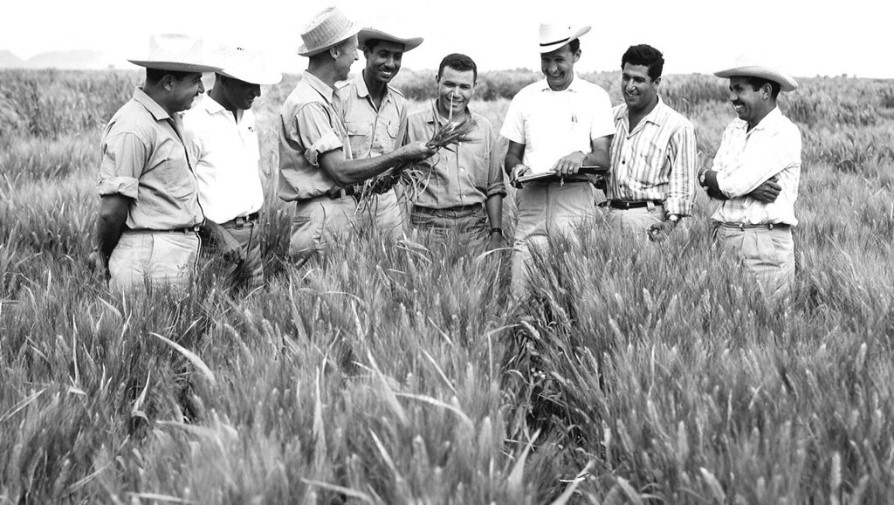

Dr. Norman Borlaug
The man who saved a million lives

Dr. Nouman Borlaug, third from left to right, trains biologist in mexico on how to increase wheat yeilds- part of his life-long war against hunger.
Here's a time line of Dr. Borlaug's life:
- 1914 - Born in Cresco, Iowa
- 1933 - Leaves is family farm o attend the university of Minnesota, thanks to Depression era program, Known as the "National youth Administration"
- 1937 - Has to stop school and save more money.
- 1938 - Finishes university and takes a job in th Us forestry service
- 1941 - Marries wife of 69 years Margret Simpson
- 1942 - receives a Ph.D. in Genetics and plant pathology
- 1944 - Reject a 100% increase in salary from Dupont, leaves behind his pregnant wife, and flies to Mexico to head a new plant pathology program.
- 1945 - discovers a way to grown twice each season, doubling wheat yields
- 1953 - crosses a short, sturdy dwarf breed of wheat with a high high-yielding American breed, creating a strain tha responds well to ferterlizer. It goes on to provide 90% of Mexico's wheat.
- 1962 - Visits Delhi and bring is high-yielding strains of wheat to the indian subcontinent in time to help mitigate mass starvation due to a rapidly expanding population
- 1970 - receives the nobel price.
- 1983 - help seven African countries dramatically increase maize and sorghum
- 1984 - becomes a distinguished professor at Texas A&M university
- 2005 - states "we will have to double the World food supply by 2050."
- 2009 - dies at the age of 95
Borlaug's life and achievements are a testimony to the far-reaching contribution that one man's towering intellect, persistence and scientific vision can make to human peace and progress.
-- Indian Prime Minister Manmohan Singh